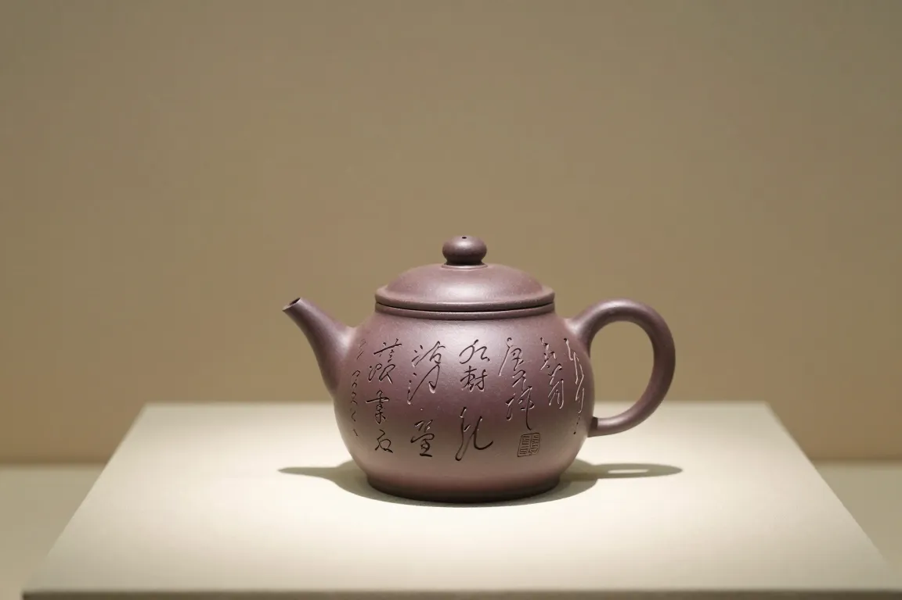

Small unglazed teapots in the red-brown stoneware of Yixing. The potter builds them by hand, and the porous wall takes a patina from the tea that it holds.

Core thesis
A teapot for steeped tea needs no glaze: a dense, porous clay keeps the tea hot and the taste pure, and the pot improves with use.
Design principles
Leave the clay bare, so that the wall can take up the oil and the colour of the tea.
Build the wall by hand from slabs and strips, 2 to 4 mm thick.
Make the lid fit the body so well that a closed spout makes the lid hold when the pot is turned over.
Make one pot hold 100 to 300 ml, for one drinker or a small group.
Choose one form for one clay: a round pot for smooth clay, a square pot for coarse clay.
Cut calligraphy or a poem into the wall, and stamp the maker's seal under the lid and on the base.
Fire the pot at 1100 to 1200 °C so that the body is dense but still takes water.
Use one clay for one kind of tea, and do not wash it with soap.
Anti-patterns
A thick glossy glaze that closes the pores of the wall
A pot of mixed clays that is fired many times for effect
A heavy, thick wall of 8 mm or more
A hand-painted flower pattern in bright enamel colours